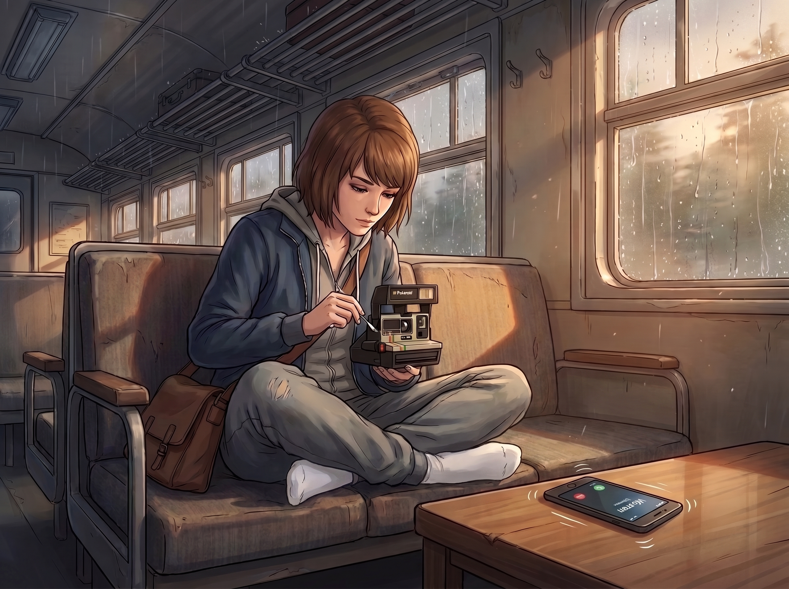

熱力學第二定律

二號車廂的午後，雨水敲打著金屬車頂。Max 穿著一條洗得發白的寬鬆灰色運動褲，正盤腿坐在沙發上，全神貫注地用棉籤清理一台中古拍立得的鏡頭。
放在茶几上的手機震動了起來，來電顯示是「Warren」。
坐在中島吧台前正在給手槍上油的 Chloe 挑了挑眉，用手肘撞了一下旁邊正在看藝術雜誌的 Victoria，一副好戲上場的表情。
Max 伸手按下了擴音鍵。
一、毫無緩衝的直球拒絕
「Max！謝天謝地妳接電話了！」Warren 充滿活力的聲音在車廂裡響起，帶著一絲標誌性的宅男式興奮，「聽著，這週末西雅圖市中心的獨立藝術影院有一場連續二十四小時的七零年代B級科幻片馬拉松！我搶到了兩張票，要一起去嗎？」
Max 手裡的棉籤停頓了一下。她沒有像幾年前那樣結結巴巴地尋找藉口，也沒有為了顧及對方面子而猶豫。
她用一種如同播報天氣預報般平靜、溫和且極度真誠的語氣回答：「嗨，Warren。不了，謝謝。」
電話那頭出現了長達三秒的死寂。Warren 顯然已經習慣了以前那個總是用「我好像有作業要寫」或者「我再看看」來推託的 Max，這種毫無緩衝的直球拒絕讓他的大腦瞬間當機。
「呃……」Warren 結巴了一下，試圖尋找台階，「妳這週末很忙嗎？還是說妳已經跟 Chloe 有約了？」
「我不忙，Warren。」Max 放下棉籤，看著手機螢幕，語氣誠懇得彷彿在做告解，「我的行事曆是一張白紙。這週末我沒有任何計畫，我也沒有跟 Chloe 約好要做任何事。我只是單純地不想出門。」
吧台那邊，Chloe 已經痛苦地捂住了嘴，拼命憋笑，連肩膀都在劇烈顫抖。Victoria 則是默默放下了手裡的雜誌，嘴角勾起一抹極度欣賞的冷笑。
二、能量守恆的科普
「可是……」Warren 的聲音聽起來充滿了困惑與無助，「如果妳完全有空，為什麼不能來呢？這可是很難得的放映會啊！」
Max 嘆了口氣。她決定用自己新開發的節能模式邏輯，向這位科學狂熱愛好者進行一次嚴謹的科普。
「Warren，聽著。從物理學和生物能量守恆的角度來看，出門這個行為，對現在的我來說是一項極度危險的高耗能作業。」Max 的聲音輕柔，卻帶著不容置疑的堅定，「我星期三下午去了一趟五金行幫 Chloe 買螺絲，那趟行程已經徹底清空了我本週的戶外社交電池。」
「去五金行只花了半個小時啊，Max！」
「那是客觀的線性時間。但在我的主觀感知裡，那是一場消耗了幾萬焦耳能量的極限生存戰。」Max 毫無內疚感地繼續陳述，「如果我這週末再去一個擠滿了人的黑暗電影院，被迫吸收周圍幾十個人類散發出來的熱量和二氧化碳，我的社交過載保護機制就會啟動，我的靈魂會直接強制關機並脫離我的肉體。」
「我們可以坐在最後一排！我保證不跟任何人說話！」Warren 還在做最後的掙扎。
三、熱力學第二定律的致命一擊
「出門就意味著我必須脫下我現在身上這條已經穿了兩天的舒適睡褲，換上具有社會規範性的牛仔褲。」Max 拋出了最後的致命一擊，「這違反了我的熱力學第二定律。而且，連續兩天穿著有拉鍊的褲子，對我的精神狀態是一種毀滅性的打擊。我很抱歉，Warren，但目前的物理法則不允許我答應你。」
電話那頭再次陷入了漫長的沉默。
「好吧……」Warren 的聲音聽起來像是一顆洩了氣的皮球，但出奇地沒有帶任何被冒犯的怒氣，反而有一種被這種極致的坦誠徹底說服的無力感，「那……祝妳的睡褲週末愉快，Max。我們下週在學校見。」
「謝謝你的理解，Warren。祝你的科幻片馬拉松順利。」
Max 禮貌地掛斷了電話。
四、看破紅塵的禪意
「哈哈哈哈哈哈！」Chloe 終於忍不住爆發出震天動地的狂笑，差點從高腳凳上摔下來。她指著 Max，笑得眼淚都出來了：「連續兩天穿有拉鍊的褲子是毀滅性打擊？！Caulfield，妳現在拒絕人的理由簡直比我的中指還要囂張！」
「我沒有囂張，我是認真的。」Max 推了推滑落的黑框眼鏡，重新拿起棉籤，眼神裡透著一種看破紅塵的禪意，「說實話真的太輕鬆了。不用編造藉口，不用擔心謊言被拆穿，只需要告訴他們我是一顆沒有能量的馬鈴薯就可以了。」
Victoria 端起茶杯，優雅地吹了吹熱氣，看著沙發上那個理直氣壯的社恐，破天荒地給予了高度評價：「Caulfield，我收回以前說妳是個軟弱討好狂的話。妳剛才那段關於能量守恆與拒絕社交的演講，其冰冷與無情的程度，甚至夠資格被寫進 Chase 財團的公關危機處理手冊裡了。」